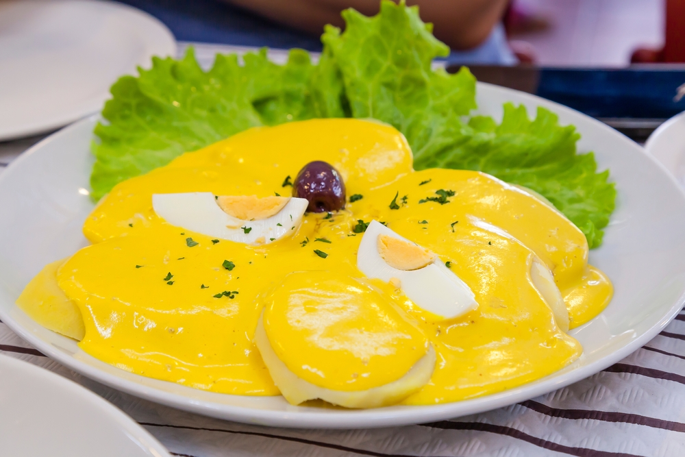
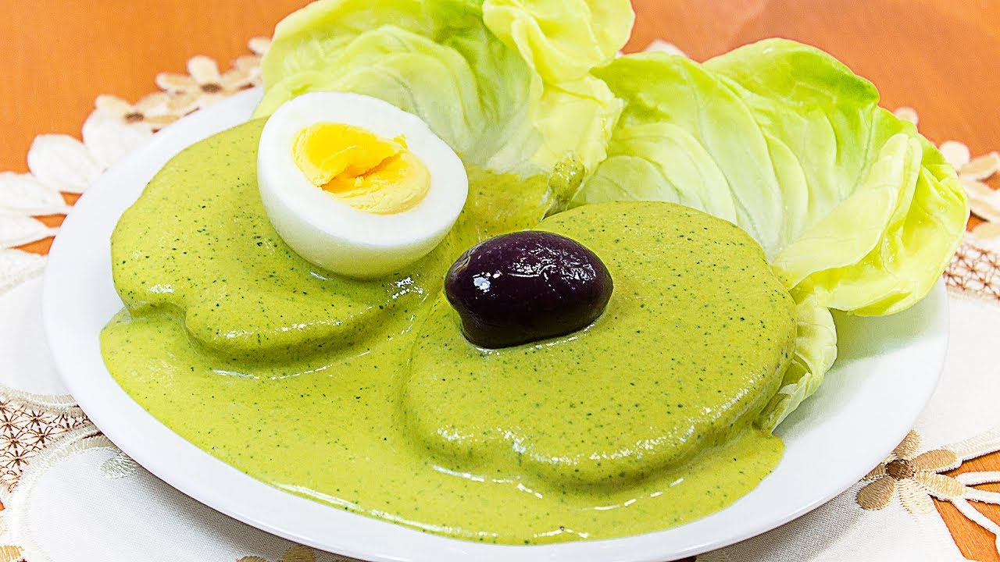
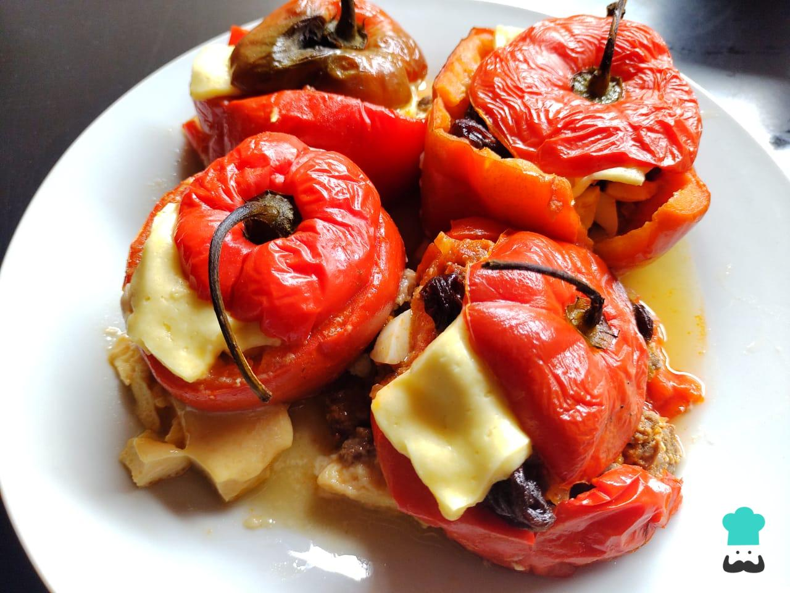

huancaina
La huancaina es una deliciosa salsa originaria de la región de Huancayo, en Perú. Se utiliza comúnmente como acompañamiento en diversos platos, especialmente en la famosa papas a la huancaina.
0

ocopa
La Ocopa es un plato tradicional de la gastronomía peruana, especialmente popular en la región de Arequipa. Es conocido por su sabor único y su combinación de ingredientes frescos.
0

rocoto relleno
El rocoto relleno es un plato emblemático de la gastronomía peruana, especialmente de la región de Arequipa.
Se trata de un aperitivo delicioso y picante que combina ingredientes frescos y sabores intensos.
0